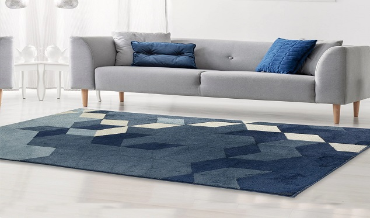
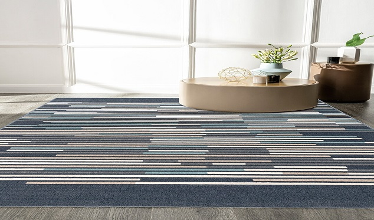

<section class="section section-md section-first bg-default text-md-left pt-5">
    <div class="container">
        <div class="row row-40 row-md-60 flex-lg-row-reverse justify-content-center align-items-xl-center">
        <div class="col-md-11 col-lg-5">
            <h5 class="text-primary-1 wow fadeInRight">Founded in 2015</h5>
            <h2 class="wow fadeInRight" data-wow-delay=".1s">Our Company</h2>
            <h3 class="wow fadeInRight" data-wow-delay=".2s">Who we are</h3>
            <!-- Bootstrap tabs-->
            <div class="tabs-custom tabs-horizontal tabs-line tabs-line-2" id="tabs-1">
            <!-- Nav tabs-->
                <div class="nav-tabs-wrap">
                    <ul class="nav nav-tabs">
                    <li class="nav-item" role="presentation"><a class="nav-link active border-0" href="#tabs-1-1" data-bs-toggle="tab">About</a></li>
                    <li class="nav-item" role="presentation"><a class="nav-link border-0" href="#tabs-1-2" data-bs-toggle="tab">Our mission</a></li>
                    <li class="nav-item" role="presentation"><a class="nav-link border-0" href="#tabs-1-3" data-bs-toggle="tab">Quality Assurance</a></li>
                    </ul>
                </div>
                <!-- Tab panes-->
                <div class="tab-content mt-3">
                    <div class="tab-pane fade show active" id="tabs-1-1">
                    <p class="txt-61 font-w-normal font-14">
                        The Company is run by <strong>Mr. Shahid Jamal</strong> with an urge to create new textures, designs and color combinations to suit the fast changing global market needs. Champo's management has over the past 6 years developed a reputation of reliability and fair practices. Integrity is a key factor at Ayash Rugs. Over the past 6 years, more family members have been involved in the business with prominent roles in designing, sales and production. The staff involved also comes with a wealth of experience which has helped Ayush Rugs grow the business by over the years.
                    </p>
                    </div>
                    <div class="tab-pane fade" id="tabs-1-2">
                    <p class="txt-61 font-w-normal font-14 mb-1">
                        We are well aware of the pressing needs of today's national and international market to have in house manufacturing capacities for different products not only with the point of view of better and consistent qualities but also a good environment for its work force.
                    </p>
                    <p class="txt-61 font-w-normal font-14 mb-1">
                        <strong>Ayush Rugs</strong> has taken few concrete steps to ensure the following things.
                    </p>
                    <p class="txt-61 font-w-normal font-14 mb-1">
                        In Bhadohi, we have a processing unit, which is responsible for processing, finishing, packing, storage and logistics (in house container stuffing) etc. for complete processes under the same roof.
                    </p>
                    <p class="txt-61 font-w-normal font-14 mb-1">
                        The Company participates in local carpet fairs and plans to start its own warehouse facility by the end of <strong>2022</strong>
                    </p>
                    </div>
                    <div class="tab-pane fade" id="tabs-1-3">
                    <p class="txt-61 font-w-normal font-13">Priority serve l flawless Quality Product. quality fuels are Initial stage Unit xe development conducted tram nethe ef raw materials the duet factning the marile. for stagi Linni the pro= tinal of launch fuller defects assurance.</p>
                    </div>
                </div>
            </div>
        </div>
        <div class="col-md-11 col-lg-7">
            <ngb-carousel>
                <ng-template ngbSlide>
                  <div class="picsum-img-wrapper">
                    
                  </div>
                </ng-template>
                <ng-template ngbSlide>
                  <div class="picsum-img-wrapper">
                    
                  </div>
                </ng-template>
                <ng-template ngbSlide>
                  <div class="picsum-img-wrapper">
                    
                  </div>
                </ng-template>
              </ngb-carousel>
        </div>
        </div>
    </div>
</section>
<!-- footer section -->
